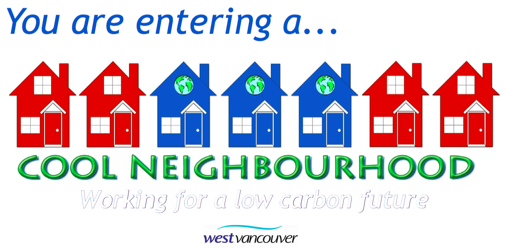
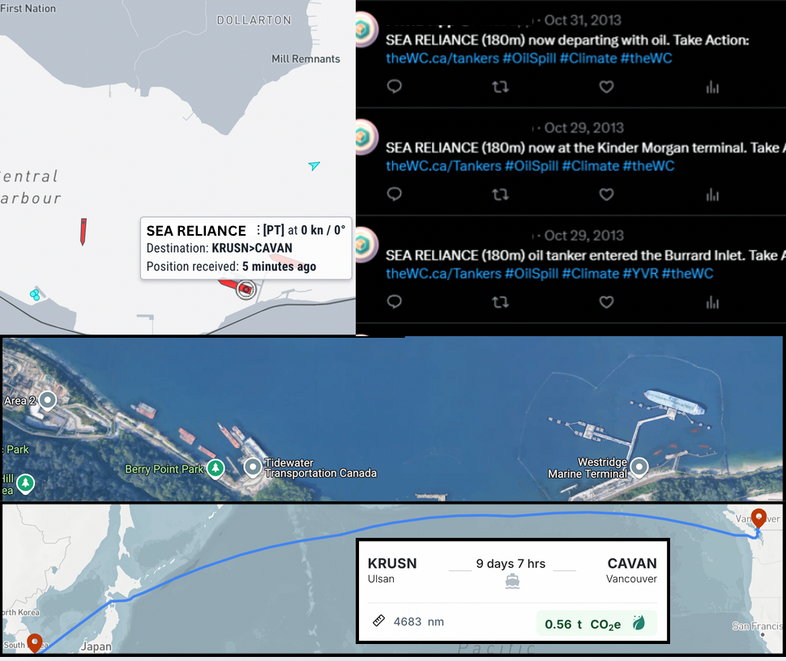
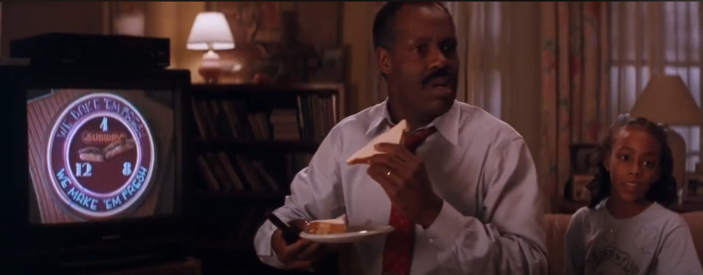

How do you turn community input into real change?
A city planner once called us with a problem: "We need to create a climate action plan, but no one shows up to our meetings. And when they do, it's just the usual suspects yelling at each other. How do we actually hear from people? More importantly - how do we get them to stop fighting and start solving?"
They weren't alone. From Indigenous Nations navigating energy transitions…to utilities like Sydney Water (Australia) trying to convince residents that yes, they really would need to drink recycled water…to neighborhood groups getting doors slammed in their faces when proposing energy retrofits…we kept seeing the same story.
Officials needed better data. Communities wanted real agency. And everyone just wanted to feel invited to the conversation…not lectured at. So we threw out the old playbook. We became conversation architects, designing engagements where communities had their say and their say became policy.
Impact Chronicle #1: Urban and Rural Climate Action
The Challenge
- Making data stop feeling like homework
- Turning conflict into collaboration
- Creating plans with real world impact, not just shelf life
- Helping neighbourhoods with collective action
Meeting the Challenge
We transform dense IPCC reports into interactive dashboards where communities could create their own climate action plans using a familiar budgeting tool. Instead of top-down mandates, people decide which emissions cuts work best for their communities; balancing feasibility, cost, and local priorities.
But tools alone don't drive engagement, so we:
- Seeded the conversation through targeted social campaigns that mirrored local values
- Amplified trust by partnering with community anchors who gave the tool credibility beyond "another app"
- Blended digital and analog tactics, resulting in direct participation where locals could see their inputs reflected in real-time modeling
The magic happened when a rural mayor could point to her town's solar priority and say, "This isn't my idea; it's what 82% of you chose when we tested the trade-offs."
Our work also helped test incentives (carrots versus sticks) and gave people the ability to, alongside their neighbours, tell 'city hall' how they'd like to drive change.
The Results
Impact Chronicle #2: Cool Neighbourhoods
In our Cool Neighbourhoods project, homeowners joined together to work on ways to both lower their GHG emissions and create more resilient neighborhoods.
The Challenge
Most homeowners wanted to cut emissions but didn't know where to start; or found the process overwhelming, expensive, or just plain boring.
Meeting the Challenge
We made it social, simple, and fun. Neighbourhoods hosted dinners, potlucks, and thermal imaging events (with help from local fire departments) where they saw real-time heat leaks in their homes and learned how to fix them. Residents shared volunteer contractors. We arranged for group discounts on heat pumps, windows, solar panels and electric motors. And neighbourhoods became more resilient and less energy intensive.
The Results
From one pilot in West Vancouver to a network stretching across the North Shore, Bowen Island and Squamish, B.C.
Homes became more energy efficient and resilient to heatwaves and weather events
Proving small steps add up
2.9 million impressions, Royal Roads White Paper, Presentation at the UN
Impact Chronicle #3: Indigenous Energy Sovereignty

The Challenge
Remote Indigenous communities relied on expensive, polluting diesel generators. Transitioning to renewables was possible but only if led by the communities themselves.
Meeting the Challenge
We supported Nation-designed plans that integrated clean energy with housing, transport, and cultural priorities.
The Results
- ✓ The process educated and engaged the community to ensure ownership of their collective climate action work
- ✓ Communities created their own plans to reach goals, many involving eliminating diesel
- ✓ Each solution scored for difficulty, jobs created, wellbeing, community support, risk and innovation
- ⭐ A blueprint for Indigenous-led transitions created for other Nations across Canada
Impact Chronicle #4: Emergency Preparedness
The Challenge
In crises - droughts, pandemics, wildfires - communities fracture. Blame spreads faster than solutions. Officials need public trust to act, but top-down mandates often backfire.
Meeting the Challenge
We designed crisis engagements that replaced fear with agency:
When fires and seawater contamination crashed the water supply, we helped residents understand the situation and tell their city government how they wanted to move forward; shifting "no way" to "why not sooner?"
Instead of debating "freedom vs. rules," we hosted forums where small businesses, citizens and skeptics alike shaped safety measures and their own path towards a safer city
For wildfire prep, the town mapped all residents; including transient foreign workers; via community networks (landlords, cafes, churches). When fire hit, everyone was reachable
The Results
Plans worked because the "unreachable" were already engaged
When people help design solutions, compliance isn't forced, it's chosen
Impact Chronicle #5: Harnessing the power of pop culture to drive real-world impact
The Challenge
How do you make climate action viral? Policy papers don't trend but culture does.
Meeting the Challenge
We infiltrated the creative bloodstream of pop culture and partnered with studios, influencers, producers/directors/writers, networks, actors and musicians to create change with computers, TV's, movie theatres and headphones. We
- Helped A-listers become climate messengers at rallies and on red carpets
- Wove environmental truths into lyrics, scripts, and even casual dialogue
- Transformed concert seats into fundraising tools and blue recycling bins into unspoken TV props
- Worked with groups like ECO to embed climate into culture